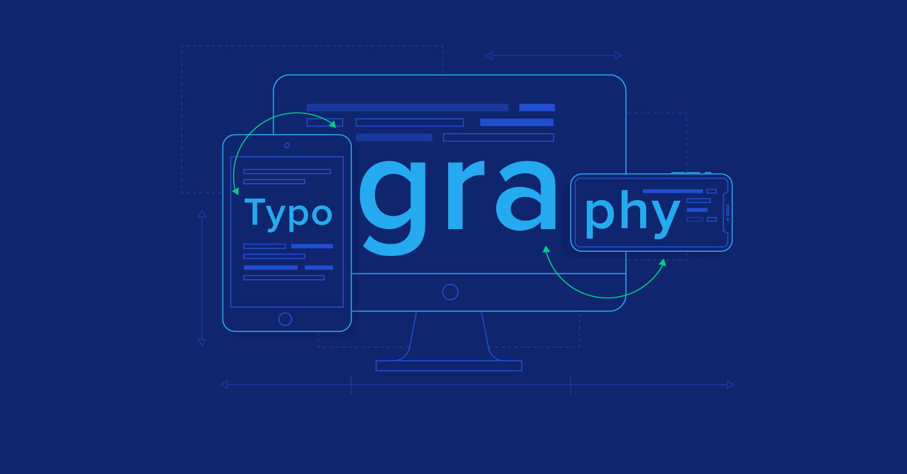
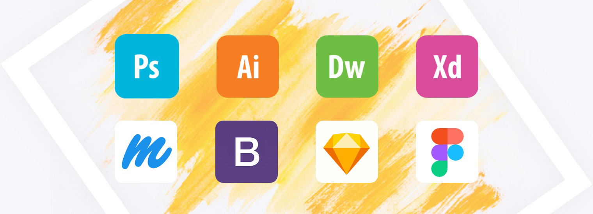

It’s important to start by saying there’s no commonly accepted definition for UX design.
User experience design is a concept that has many dimensions, and it includes a bunch of different disciplines—such as interaction design, information architecture, visual design, usability, and human-computer interaction.
But let’s try to get a clearer picture of what that really means.
1. Get Started: Things to Do
Master a tool (Figma) or (Adobe XD) or (Sketch)
Practice tools on your free time
Take a UX, UI, or Web Design course
Do research and redisign some of your favorite websites for more experience
Think about solutions, improvements, and design with the intent to create and solve problems
2. What you should expect to do while learning/doing UX design
Research
Case Studeis
Wireframing
Prototyping
Mockups
Being able to create pretty and aesthetic designs isn’t good enough. You have to show that you’re able to design with the intent to improve and solve problems that users may face.
3. Softwares for UX Design
Figma (#1 Software for UX design)
Adobe XD
Sketch
Abstract
InVision
Here is a very in depth guide on how to get started in UX design. It also notes the things you should be thinking about and how your
mentality should be when entering this field.
Crucial Web Design Skills
Design Principles
You don’t need to know music theory to write a song, and if you’ve never taken an art class, you can still draw. Some of us might have an innate artistic ability, but knowing the basic fundamentals can make the difference between recreating what you see and being able to build a design that’s calculated and unique.
These fundamentals are the foundation of web and graphic design and important to know. Whether you’re designing a portfolio or a print ad, these concepts can help guide your work. Let’s do a quick recap.
1. Typography
Typography shapes our perception of ideas. A type’s weight and geometry communicates meaning, and as a designer, it’s important to know the best way to deliver messaging with the appropriate typographical choices.
All the font options can make it hard for new designers to know what to choose. Practical fonts like Georgia, Verdana, and Roboto work well for body copy, while more decorative typefaces should be used sparingly as ornamentation. Good designers know the difference between type styles and where to use them.
There are plenty of resources on the web to help broaden your typographic knowledge. FONTS IN USE shows different typefaces applied to a variety of media. Tools like Font combinations for web designers can give you ideas for possible pairings.

2. Software for Design
Adobe Illustrator, XD, Photoshop, Figma, and Webflow are a few design software programs designers should be familiar with. You should have a grasp of photo-editing basics and the ability to tweak vector-based graphics, like a logo that may come your way.
For those on a budget, free photo-editing software like Gimp or the vector-based Inkscape will give you the power to do what you need to do without spending a ton of money. And, as you develop your web design skills, animation software like Motion or After Effects are handy tools to add motion and pizzazz to your work.
And then there’s the platform you’ll use to create your site. Webflow has an intuitive interface that generates flawless code for you — we think it’s the perfect choice.

3. HTML & CSS
Gaining thorough knowledge about HTML (Hypertext markup language) and CSS (Cascading style sheets) is one of the finest web designer skills that you can aim to learn.
HTML and CSS are the fundamental blocks upon which the style and structure of a website are built.
They enable you to read and edit a page, as often as you want to.
By learning these principal languages, you will easily be able to secure a decent web design job.
Conclusion
One of the key slills to a successful product is the creation of effective, efficient and visually pleasing displays. In order to produce such high-quality displays, whether they are graphical (e.g., websites) or tangible (e.g., remote controls), an understanding of human vision is required, along with the knowledge of visual perception. By observing, researching, and identifying examples of our perceptual abilities, we can design products according to these unifying qualities.